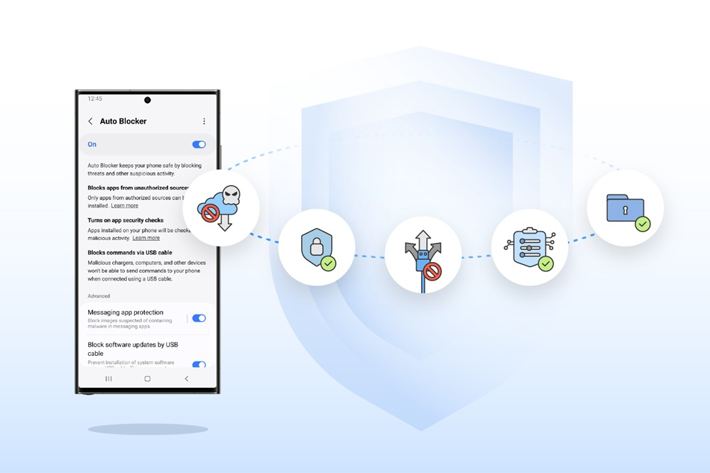

Samsung Auto Blocker is a security tool designed to enhance the safety and privacy of Samsung Galaxy devices. Released as part of One UI 6, Auto Blocker provides users with an additional layer of protection by preventing unauthorized app installations and blocking potential malicious activities. This feature aims to safeguard users against threats such as malware, phishing attacks, and unauthorized access through USB connections. By giving users more control over their device security settings, Auto Blocker ensures a secure mobile experience while maintaining the flexibility and openness of the Samsung Galaxy ecosystem.
| Purpose | Enhances the safety and privacy of Samsung Galaxy devices. |
|---|---|
| Release | Part of One UI 6. |
| Main Features |
|
| Benefits |
|
| User Control | Provides users with more control over their device security settings. |
| Goal | Ensures a secure mobile experience while maintaining the flexibility and openness of the Samsung Galaxy ecosystem. |
Only apps from authorized sources, such as the Play Store or Galaxy Store, can be installed. This helps prevent the installation of malicious apps.
Malicious chargers, computers, and other devices won't be able to send commands to your phone when connected using a USB cable.
When you receive a message with an image that's suspected of containing malware, the image will be blocked to keep you safe.
Prevent installation of system software using a USB cable. This can prevent someone with physical access to your phone from installing malicious software without your knowledge.
Apps installed on your phone will be checked for malicious activity.
Prevents device admin apps and work profiles from being activated on your tablet. This protects you from attacks where these features may be used to access your data or remotely control your devices.
Prevents your phone from automatically connecting to non-secure Wi-Fi networks you've used in the past. This can prevent someone else from intercepting your network traffic and personal data. You can still connect to these networks manually in Wi-Fi settings. Non-secure networks include Open, Enhanced Open, and WEP networks.
Prevents preview images and hyperlinks from appearing when you receive a message that includes a web address. This helps protect you from accidentally visiting malicious websites. If you receive a message that contains a web address from someone you trust, you'll need to copy and paste or type the web address in your browser.
The shared album menu isn't available, and other people can't invite you to shared albums. This protects you against invitations from people who may not be who they say they are, and it prevents you from accidentally sharing pictures that might be sensitive.
When you share a picture from Gallery, location data will be removed from the picture before it's sent. This prevents the recipient from being able to determine where the picture was taken.
The user interface of Auto Blocker is designed to be simple and user-friendly, allowing users to easily customize security settings according to their personal needs:
Auto Blocker can be activated and customized in the Settings > Security and Privacy section on devices running One UI 6.
Users receive warning notifications and the option to temporarily disable the security feature when attempting to install apps from unauthorized sources.
Provides detailed reports on blocked access attempts and installations, helping users better understand potential security threats.